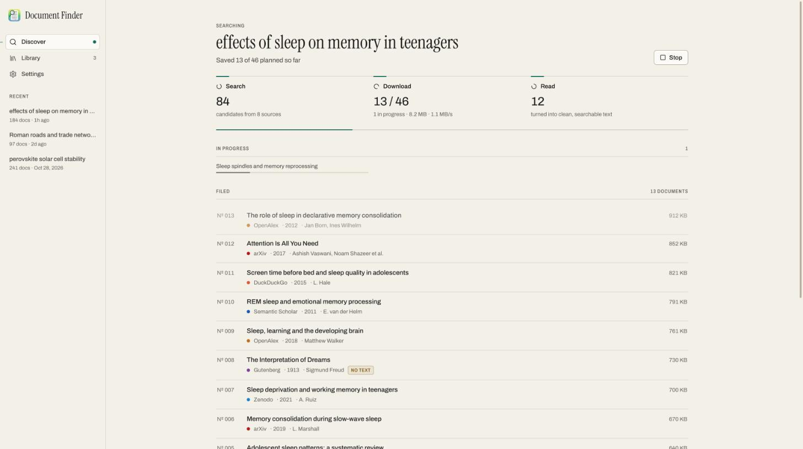
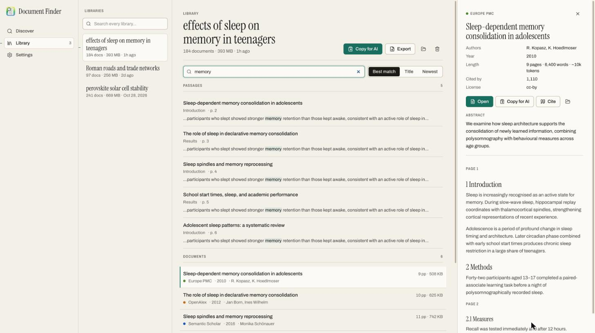

Copy for AI
One click packs the best documents into a single corpus sized for a context window — every section starts with its citation. Paste it into any chat.
Free · open source · macOS, Windows, Linux
Describe a topic in plain language. Document Finder searches open-access libraries in parallel, downloads the best matches, and turns them into clean, cited text your AI can actually use.

How it works
Your question fans out to scholarly databases, open repositories and the web at once. Results are de-duplicated across sources and ranked for relevance — then a second pass learns the field’s own vocabulary from the best hits.
The best matches start downloading within seconds, not minutes. Every open-access copy of a paper is tried — publisher, repository, preprint — and busy servers are slowed for automatically. Anything you’ve downloaded before is reused.
Each PDF, EPUB and web page becomes clean Markdown: headers, page numbers and hyphenation removed, sections and page markers kept, metadata on top. All of it is full-text searchable on your machine.
The library
Search the full text of everything you’ve collected, jump to the exact passage and page, and read a clean preview without leaving the app. Copy a citation, open the original, or hand a single paper to your AI.

For your AI
No local models to download. Your AI — Claude, ChatGPT, Gemini or anything else — does the thinking; Document Finder supplies clean, cited sources.
One click packs the best documents into a single corpus sized for a context window — every section starts with its citation. Paste it into any chat.
One .md file with every document’s full text — a section and
citation per document, ready for RAG. Or a zip with an index, one Markdown file per document, retrieval-ready
chunks.jsonl, a references.bib, and an optional
corpus.md. Ready for Projects, custom GPTs or a RAG pipeline.
Let Claude Desktop, Claude Code or any MCP client search and read your libraries directly. One click in Settings adds it to Claude Desktop.
claude mcp add document-finder -- <app> --mcpSources
Nine sources out of the box. No keys, no sign-ins, no paywalls bypassed.
Download
macOS builds are signed and notarized. On Windows, SmartScreen may ask you to confirm
the first launch (More info → Run anyway). Linux packages need glibc 2.35+ (Ubuntu
22.04, Debian 12 or newer); the Flatpak runs anywhere. If the window opens blank on an
older GPU driver, enable Settings → Safe rendering mode or launch with
WEBKIT_DISABLE_DMABUF_RENDERER=1.